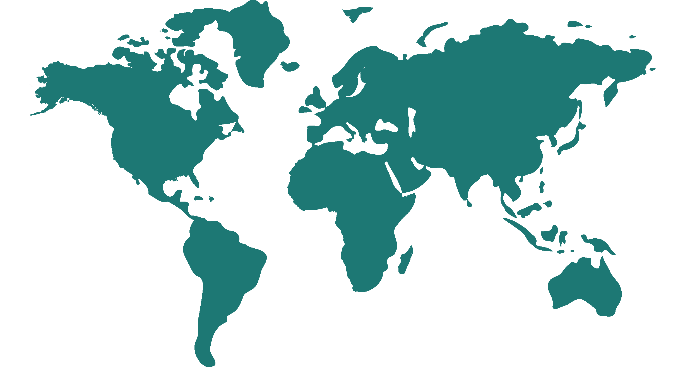

Damian Drożdż
Engineering Manager
Passionate DevOps leader blending technology and agility for engineering excellence. Effective communicator and stakeholder manager. Inspiring collaboration, innovation and high-performance teams. Expertise in cloud computing, Agile/DevOps, scalability, observability, automation and quality assurance.
Tech stack
Windchill RV&S, Jira, Trello, Azure Boards
Azure, Jenkins, AWS
Python, PowerShell
Docker, Kubernetes
Terraform, Ansible
Prometheus, DataDog
Axivion Bauhaus, Mathworks Polyspace, Helix QAC, Black Duck
Vector SQUORE, PowerBI
Work History
Aptiv | Engineering Team Manager
Jan 2024 – Present
I supervise international software teams, architect and develop DevOps solutions and processes, lead cloud migrations and improve scalability and vailability through containerization and DevOps on Azure Platform.
- •Responsible for supervising software engineers in multiple international locations.
- •Involved in technical support and interface with various departments.
- •Developed internal processes for software projects and focused on CI/CD, software integration, integration testing and DevOps on Azure.
- •Implemented innovative solutions, improved operational efficiency and reduced costs.
- •Led migrations to cloud-based platforms, designed CI/CD solutions and improved system scalability and availability.
Team Management
Leadership
Presentation Skills
Scrum
Software Development Lifecycle
Software Engineering
Agile Methodologies
Kanban
DevOps
GitOps
Project Management
Quality Assurance
Risk Assessment
Configuration Management
Process Improvement
Azure DevOps
Infrastructure Automation
System Scalability
Cloud Computing
Continuous Integration
ZF Group | Software Engineering Supervisor
Nov 2021 – Dec 2024
I supervise international software teams, architect and develop DevOps solutions and processes, lead cloud migrations and improve scalability and vailability through containerization and DevOps on Azure Platform.
- •Responsible for supervising software engineers in multiple international locations.
- •Involved in technical support and interface with various departments.
- •Developed internal processes for software projects and focused on CI/CD, software integration, integration testing and DevOps on Azure.
- •Implemented innovative solutions, improved operational efficiency and reduced costs.
- •Led migrations to cloud-based platforms, designed CI/CD solutions and improved system scalability and availability.
Team Management
Leadership
Presentation Skills
Scrum
Software Development Lifecycle
Software Engineering
Agile Methodologies
Kanban
DevOps
GitOps
Project Management
Quality Assurance
Risk Assessment
Configuration Management
Process Improvement
Azure DevOps
Infrastructure Automation
System Scalability
Cloud Computing
Continuous Integration
ZF Group | Software Team Leader
Nov 2019 – Nov 2021
I managed a team of internal and external engineers, tailored software standards, supervised documentation, collaborated on testing and defined release processes.
- •Managed teams of on-site engineers and external employees.
- •Developed software standards, processes and procedures for the automotive industry.
- •Collaborated with system architects and software engineers to integrate SW, develop tests and deliver the product.
- •Ensured code quality through static testing and troubleshooting software.
Team Management
Leadership
Backup and Recovery
CI/CD Pipelines
Software Engineering
Agile Methodologies
Scrum
Kanban
DevOps
Project Management
Quality Assurance
Software Integration
Continuous Testing
Process Improvement
Azure DevOps
Jenkins
System Scalability
Cloud Computing
Continuous Integration
Python
ZF Group | Software Engineer
Jun 2018 – Nov 2019
I integrated and released software components and systems. I collaborated closely with cross-functional teams, conducted thorough testing and validation, and resolved any integration issues that arose.
- •Developed integration strategy and integration test plans.
- •Maintained and expanded automatic software building environment.
- •Developed integration tests and automated build processes.
Backup and Recovery
CI/CD Pipelines
Software Engineering
Agile Methodologies
Scrum
Kanban
Quality Assurance
Software Integration
Continuous Testing
Process Improvement
Jenkins
Cloud Computing
Continuous Integration
Python
Focus Telecom | IT Support Engineer
Dec 2017 – Mar 2018
I designed and implemented robust multi-channel communication systems to meet the customers's requirements. I successfully led system deployment projects, collaborated with cross-functional teams and ensured seamless production deployment.
- •Implemented advanced ICT solutions for clients.
- •Managed projects related to multi-channel communication.
- •Configured Interactive Voice Response (IVR) systems and provided customer training.
- •Implemented services and products at customer sites.
Quality Assurance
Customer Training and Support
Configuration Management
Pre-sales and Post-sales Support
Project Management
Cloud Computing
Public Library |
Information Technology Technician
Dec 2017 – Mar 2018
I provided essential technical support and assistance to library patrons and staff. I efficiently resolved hardware and software issues, conducted system maintenance and ensured the smooth functioning of computer systems and networks.
- •Led the IT department for a public library and museum.
- •Maintained software and hardware, created web pages and performed backups.
- •Assisted in information gathering and architecting IT solutions.
- •Implemented and supported networking systems.
Presentation Skills
Web Development
Backup and Recovery
Troubleshooting and Technical Support
IT Infrastructure Management
Networking
Leadership
Project Management
Data Protection and Compliance (RODO)
PZU | Insurance Agent
Aug 2013 – Oct 2015
I provided comprehensive insurance solutions and services to clients. I effectively assessed client needs, recommended appropriate insurance products, and facilitated policy issuance and claims processing.
- •Managed my own company and sold insurance and annuity products.
- •Developed leads, advised customers and established strong relationships.
- •Maintained compliance requirements and marketed the company's offerings.
Consultative Selling
Customer Relationship Management
Lead Generation
Relationship Building
Risk Assessment
Business Acumen
Education
UNIVERSITY OF LODZ | Master’s Degree: IT Management
Sept 2019 – Feb 2021
Multi-dimensional, managerial understanding of business and business organizations
- •Strategic Planning and Decision Making
- •Project Management and SDLC
- •IT Governance and Risk Management
- •Leading and Managing IT teams
- •Software Development Methodologies
LODZ UNIVERSITY OF TECHNOLOGY | Engineer’s Degree: Mechatronics
Sept 2013 – Sept 2017
Combination of knowledge and skills related to four areas: electronics, electrical engineering, mechanics and computer science.
- •Electro-Mechanical Systems
- •Robotics and Automation
- •Hardware and Software Systems Integration
- •Embedded Systems and Robotics Programming
Projects & Accomplishments

PolandGermany
USA
India
China
Japan
PolandCzęstochowa, Łódź
- Team Building - Led high-performance integration team, recruited and developed 6 engineers to reach 8 members.
- Development and expansion of the Integration Department - Drove 400% growth in engineering team through end-to-end hiring process.
- Jenkins CI/CD System - Streamlined Integration System, reduced integration time by 30% and automated processes to cut SW development cost by 15%.
- DevOps Platform - Customized and developed multidivisional DevOps Platform using tools, automation frameworks and infrastructure-as-code practices. Achieved $110k annual savings for a division by leveraging cost-effective off-the-shelf automation solutions.
- HIL Farm Project - Key role in developing and establishing state-of-the-art Hardware-in-the-Loop (HIL) farm for advanced system testing and validation.
- Division DevOps Process - Led DevOps Division as Process Leader, developed and tested cloud solutions, establishing them as official workflows. Designed scalable architectures for enhanced productivity and cost savings.
GermanyKoblenz, Radolfzell, Friedrichshafen
- BMW KAFAS S-CAM embedded project - Developed and executed Python-based test scripts for system integration, leveraging HIL Testing environment. Maintained and enhanced Jenkins system.
- Full-Range Radar Gen21 Core embedded project - Created integration strategies, developed test plans and managed external teams for Interface Tests delivery.
- Wabco Mid-Range Radar Gen21 embedded project - Designed and implemented data-driven metrics systems for decision-making and performance evaluation.
- LIDAR - Managed agile team delivering DevOps solution in Adaptive AUTOSAR project, enabling efficient development cycles and seamless integration. Orchestrated CI/CD and infrastructure deployment, accelerating software development and improving project outcomes.
USAFarmington Hills
- S-CAM 6 Core embedded project -Led DevOps team in implementing new cloud solutions developed by DevOps Platform. Orchestrated integration of static analysis tools, scalable infrastructure and observability measures as SW Project Manager to optimize project performance.
IndiaHyderabad
- Nissan Sweet400 S-CAM4.8 embedded project - Led DevOps team in optimizing CI/CD process, reducing integration time by 50% and increasing test coverage by nearly 20%.
ChinaShanghai
- Critical Products embedded projects in China - Led and empowered Integration Team across 18 projects for multiple Chinese automotive companies. Implemented quality assurance measures, leveraging Jenkins CI/CD system for comprehensive coverage. Reduced required engineers by over 90% (from 54 to 4).
JapanYokohama
- MAZDA S-CAM 4.8 Embedded project - Managed integration testing team, delivering project to SOP state with exceptional quality metrics in the division.